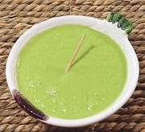

|
Epis SeasoningHaiti - Epis, Tout-trempé | ||||
| Makes: Effort: Sched: DoAhead: |
3 cups ** 45 min Yes |
This is an essential seasoning mix in Haiti, used for many dishes, including the famous Soup Joumou. To use as a Dip, add Salt & Pepper to taste. | |||
|
|
----- 4 7 6 4 4 3 ----- 1 1 3 1/4 1/4 |
--- oz oz cl oz oz oz --- c c c |
-- Vegies Shallots Onion Garlic Bell Pepper grn (1) Bell Pepper yel Celery --------- Habanero Chili Parsley Thyme Sprig Lime Juice Olive Oil ExtV |
Make - (45 min)
|